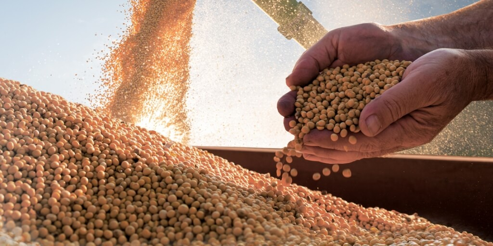
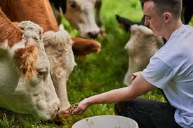

🌱Raízes Conectadas
Do campo à cidade: conheça o caminho dos alimentos e quem está por trás de tudo.
🏡 Do Campo à Cidade
Você já parou pra pensar como o pão chega até a sua mesa? Tudo começa lá no campo! 🌾
Produção Rural
Onde tudo começa – na fazenda!
Transporte
Caminhões e estradas levam os produtos até as cidades.
Indústria
Onde os alimentos são processados e embalados.
Distribuição
Mercados e feiras recebem os produtos.
👩🏽🌾 Conheça o Produtor

Dona Maria, 62 anos
Planta cenoura e milho há mais de 40 anos no interior da Bahia.

Seu João, 38 anos
Produtor de leite em Santa Catarina. Entrega leite fresquinho todo dia.

Júlia, 25 anos
Jovem produtora de hortaliças orgânicas no Paraná.
🌎 Sustentabilidade e Futuro
O agro pode ser verde!
Veja como práticas sustentáveis estão mudando o campo:
- Uso consciente da água
- Plantio direto para conservar o solo
- Energia solar em propriedades rurais
- Redução do desperdício alimentar
- Práticas agroecológicas
Recursos para você aprender mais:
Sustentabilidade no Agro Embrapa Canal de vídeos agro🎓 O Papel do Estudante
Como participar?
- Evitar desperdício de comida
- Dar preferência a alimentos da sua região
- Reutilizar embalagens e separar o lixo
- Conhecer quem planta o que você come